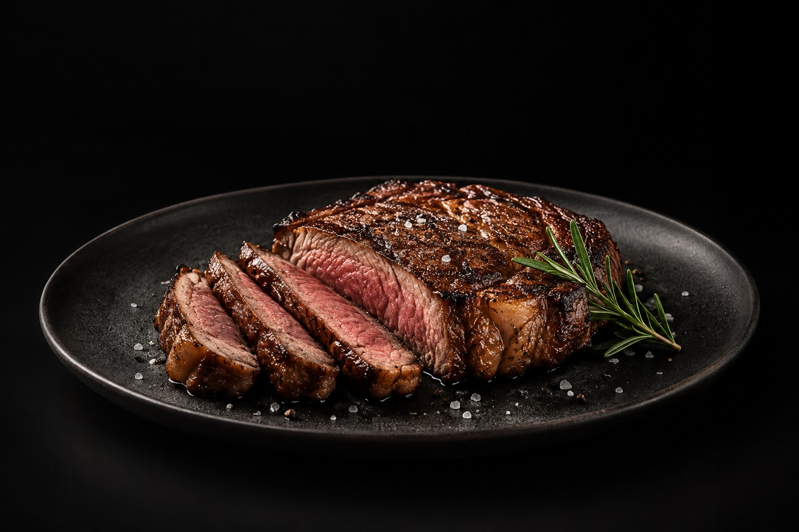
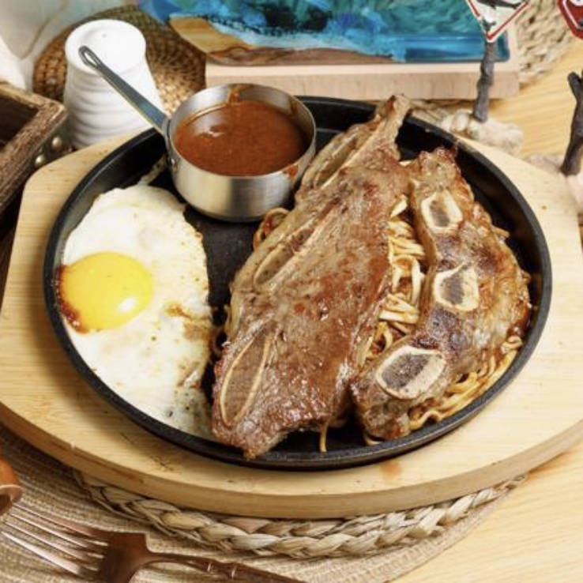
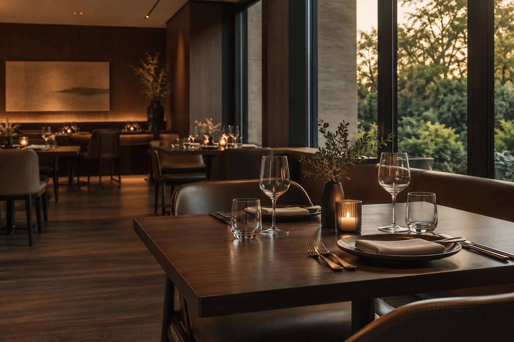

人氣牛排餐
經典鐵板排餐，搭配荷包蛋、鐵板麵與濃郁醬汁，簡單卻很滿足。
HI STEAK ・ TAICHUNG
海牛排 Hi Steak，提供平價又有份量的鐵板排餐，搭配荷包蛋、麵與濃郁醬汁，簡單就是好吃。

牛排，是主角。相聚，才是重點。
MENU
主餐、雙拼加購、單點與價格，歡迎參考下方菜單。

POPULAR DISHES
熱騰騰鐵板現煎，搭配荷包蛋、鐵板麵與醬汁，就是海牛排最經典的滋味。
經典鐵板排餐，搭配荷包蛋、鐵板麵與濃郁醬汁，簡單卻很滿足。

香氣十足、份量實在，適合想吃得更豐富一點的你。

厚實肉感與濃厚肉香，是喜歡大口吃肉的人不可錯過的人氣選擇。

SEE YOU AT hiSteak.
期待和你，在餐桌上見。
歡迎到店用餐，也可透過 Uber Eats 直接下單外送。